CAMPAIGN REVIEW & DIGITAL ROADMAP
THE DIGITAL
JOURNEY
Production Period Campaign Review & Digital Roadmap
හන්තානට ඇහෙනවද…
A Feature Film · Directed by Shirly P. Delankawala · Produced by Rimzaan Shaheed
CAMPAIGN TIMELINE
LESS THAN
TWO WEEKS
Everything on the following pages happened in the first 13 days of active campaign work — before any structured advertising was used.
EARLY ORGANIC CAMPAIGN PERFORMANCE
What has happened
so far?
In under two weeks, the campaign for හන්තානට ඇහෙනවද… has already reached thousands of people on Facebook and Instagram — most of whom did not already follow the page.
No paid advertising has been used yet. What you are about to see happened organically.
FACEBOOK · 01–14 JULY 2026
Facebook Performance
Source: Facebook Page insights, 01–14 July 2026 · IONIK Collectives campaign management
THE FACEBOOK DISCOVERY SIGNAL
of Facebook views came from people who were not already following Ceylon Motion Pictures.
The campaign is already travelling beyond the people who follow the page.
A strong early organic discovery signal — not a claim of virality.
INSTAGRAM · 01–14 JULY 2026
Instagram Performance
Source: Instagram account insights, 01–14 July 2026 · IONIK Collectives campaign management
THE INSTAGRAM DISCOVERY SIGNAL
of Instagram views came from people who did not already follow the account.
Most people seeing the content did not already follow the account.
Early content discovery beyond the existing Instagram audience.
THIS HAPPENED
ORGANICALLY.
No structured, ongoing Meta advertising campaign has been used yet.
This performance came from film identity, campaign positioning, content strategy, digital rollout, social communication and audience interest — nothing more.
NOW IMAGINE GIVING THE CAMPAIGN
A DISTRIBUTION ENGINE.
The distribution engine is Meta advertising.
IN PLAIN ENGLISH
What the numbers
actually mean
Organic content tells us what is working.
Advertising helps us show what is working
to more of the right people.
WE TEST ORGANICALLY.
WE LEARN.
WE AMPLIFY STRATEGICALLY.
THE CAMPAIGN ECOSYSTEM
What IONIK has built so far
- Official digital film positioning
- Immersive official film website
- Ceylon Motion Pictures digital presence
- Muhurat campaign communication
- Film reveal content
- Production Diary campaign
- Working Stills album structure
- Behind-the-scenes rollout strategy
- Awareness campaign content
- "Choose Life. You Are Not Alone." communication
- Social captions & copywriting
- WhatsApp campaign distribution
- Poster communication support
- Film credit communication support
- Campaign continuity planning
SOCIAL MEDIA CREATES DISCOVERY. THE WEBSITE DEEPENS THE EXPERIENCE. CAMPAIGN CONTENT BUILDS THE JOURNEY.
Official film website: ceylonmotion.pictures
FROM ORGANIC MOMENTUM TO STRATEGIC REACH
Current organic performance, at a glance
A dedicated Meta advertising media budget gives IONIK the ability to strategically expand this distribution — deliberately, not by chance.
WHAT META ADVERTISING CHANGES
Five ways paid distribution can help
Film Awareness
Introduce හන්තානට ඇහෙනවද… to relevant Sri Lankan audiences.
Video Distribution
Place strong Reels and campaign videos in front of larger relevant audiences.
Engagement Growth
Distribute campaign content to audiences more likely to engage with film and entertainment content.
Audience Building
Develop engaged audience signals that can support future teaser, trailer and release campaign planning.
Website Traffic
Strategically direct selected audiences to the immersive official film website.
We are not only promoting today's post.
We are learning who is interested in the film before the trailer arrives.
The audience signals we build during production can help us make better campaign decisions later.
THE MONTHLY RETAINER
What LKR 55,000 pays for
Meta Advertising Campaign Management
Planning, setup, audience targeting, monitoring, optimisation and ongoing management. This is IONIK's management fee — the Meta advertising media budget is separate.
15 Premium Static Designs
15 × LKR 1,500 — campaign creatives, Production Diary covers, Working Stills communication, cast & crew content, awareness creatives.
5 Edited Reels
5 × LKR 3,000 — short-form video prepared for Facebook, Instagram and TikTok.
Campaign Management & Performance Reporting
Coordination, performance review, identifying stronger content, reviewing audience response, informed adjustments.
TOTAL MONTHLY RETAINER
15,000 + 22,500 + 15,000 + 2,500 = 55,000 / month. Meta advertising media spend (the budget paid to Meta to distribute ads) is separate from this management fee.
STRATEGIC VALUE INCLUDED WITHIN THE PARTNERSHIP
More than the retainer
Included within the IONIK partnership — no separate monthly charge
LKR 55,000 is not simply purchasing 15 designs and 5 reels. It is an actively managed digital film campaign ecosystem.
MONTHLY DELIVERABLES
Every month
RECOMMENDED
Meta Verified — Business Standard
Total
USD 29.98/monthTwo separate subscriptions — one for the Facebook Page, one for the Instagram account.
Why Business Standard?
- Verified badge
- Official account authenticity
- Impersonation protection
- Enhanced Meta support
- Enhanced profile
- Search optimisation
As awareness grows, audiences, cast followers, media and the public need to easily identify the official source of film information.
Meta subscription fees are paid directly by the client to Meta. IONIK's verification setup assistance is complimentary.
THE CAMPAIGN IS BUILT IN PHASES — PHASE 01
Production Period
Build the foundation.
- Establish the official digital presence
- Introduce the film identity
- Document the production journey
- Build early awareness
- Test audience response
- Establish content consistency
- Build early audience signals
- Maintain campaign momentum
The current scope is designed to spend efficiently while the film is still being made.
THE CAMPAIGN IS BUILT IN PHASES — PHASE 02
Post-Production
Build anticipation.
When principal production ends, IONIK and Ceylon Motion Pictures will discuss a new digital campaign scope. Possible activity may expand into:
- Character campaigns & introductions
- Motion posters
- First-look content
- Film world storytelling
- Music-related content
- Director & creative team interviews
- Edited BTS stories
- Increased video content
- Stronger paid advertising activity
- Teaser & trailer campaign preparation
The Post-Production campaign scope will be discussed and quoted separately.
THE CAMPAIGN IS BUILT IN PHASES — PHASE 03
Premiere & Release
Turn attention into action.
- Official trailer launch & advertising
- Premiere campaign & media amplification
- Cast-led social campaigns
- Countdown campaign
- Cinema & show-time communication
- Audience reactions & review amplification
- Premiere coverage
- Influencer / creator amplification strategy
- Retargeting, where strategically appropriate
- Release awareness & ticket action campaigns
The Premiere & Release campaign will require a new scope based on the film's final release strategy.
WE DO NOT WANT TO SPEND MORE TOO EARLY.
WE WANT TO SPEND SMARTER
AT THE RIGHT STAGE.
Build the foundation. POST-PRODUCTION
Build anticipation. RELEASE
Scale attention. Drive action.
හන්තානට ඇහෙනවද…
THE FILM IS STILL BEING MADE.
THE AUDIENCE JOURNEY HAS ALREADY BEGUN.
Less than two weeks in, the campaign is already reaching people beyond the existing audience. Now we build carefully.
ONE FILM. ONE CONNECTED DIGITAL JOURNEY.
WHERE TECHNOLOGY AMPLIFIES CULTURE.